Week4:
1.把各自組別的網誌git clone到自己的隨身碟裡https://github.com/mdekmol/cd2019b-task1-2019cdb_t1_g4
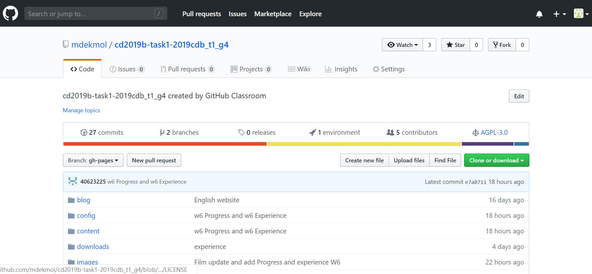
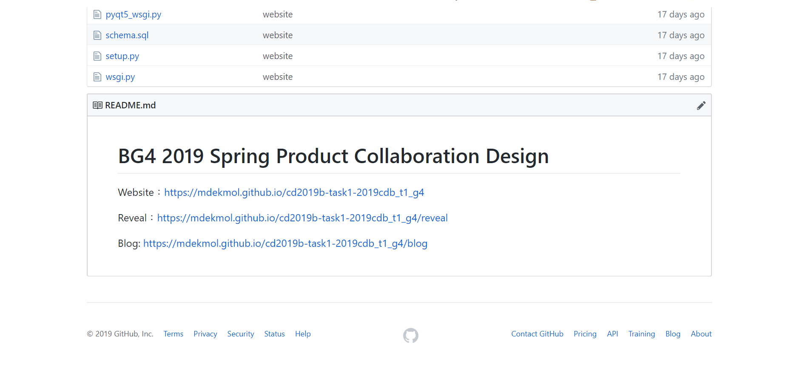
Week5:
1.這週開始練習v-rep，因為要等手足球零件畫出來，所以先練習題目BubbleRob tutorial，內容包含叫出圓柱、改變感測器方向及感測器種類。
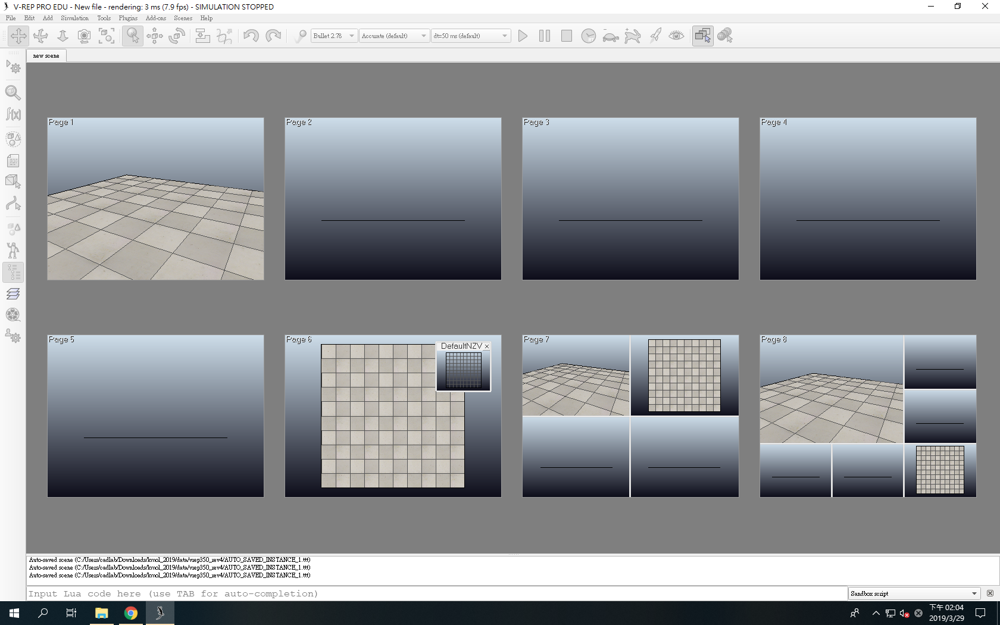
2.觀看BubbleRob tutorial程式教學影片
Week6:
1.完成BubbleRob tutorial的全部模擬
2.觀看BubbleRob tutorial程式教學影片
Week7:
Week8:
1.練習實習任務三
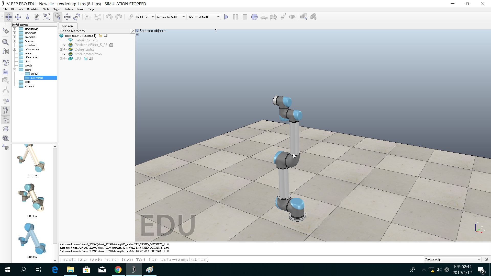
2.模組的各部位零件只能使用合併，無法個別拆解
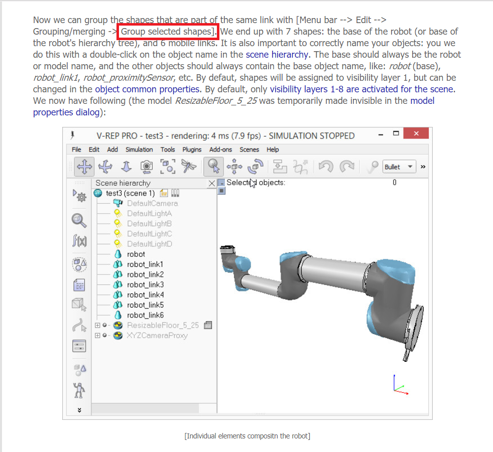
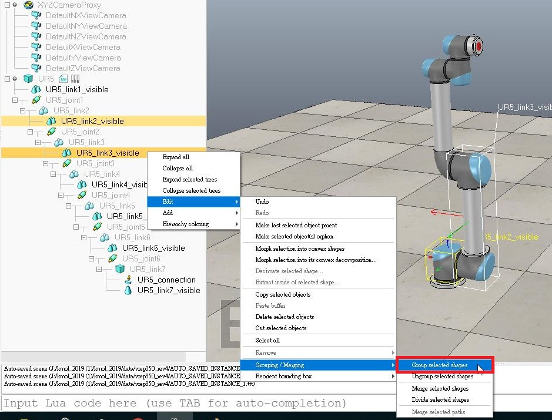
3.用onshape劃出大概模型在進行模擬
實驗三繪製(onshape)
Week9:
1.期中報告
Week10:
1.重新畫了一個組合圖，在關節部分加裝軸
實驗三繪製(onshape)
2.進行模擬，繪圖完各部位已能分割，不過軸的部分出現問題，無法裝到正確位置
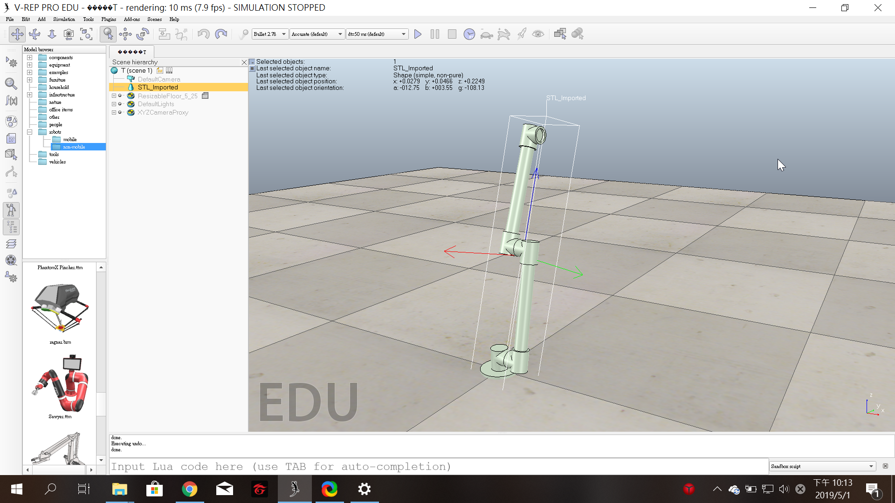
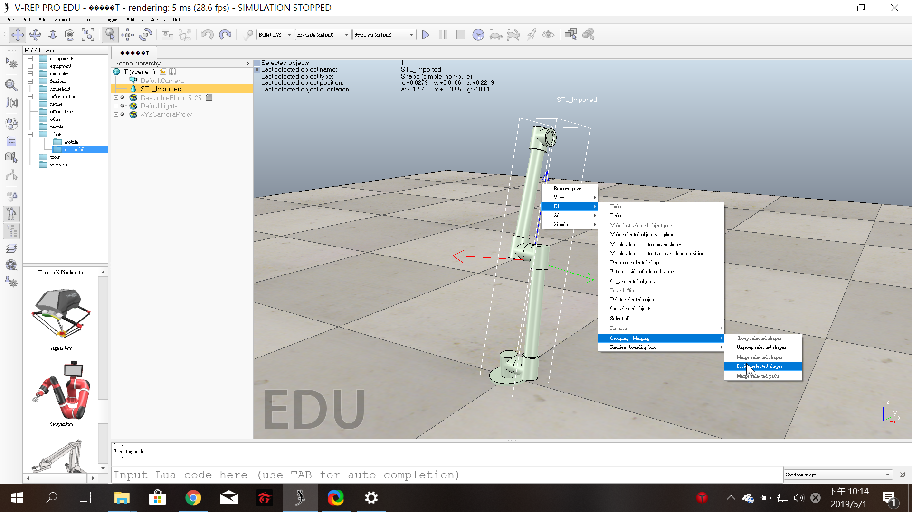
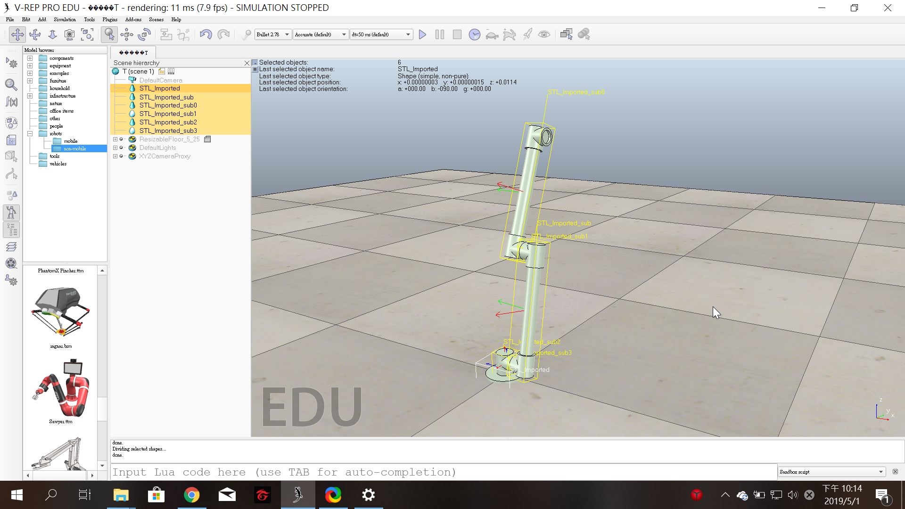
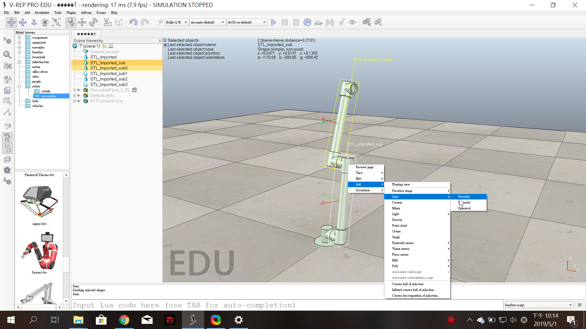
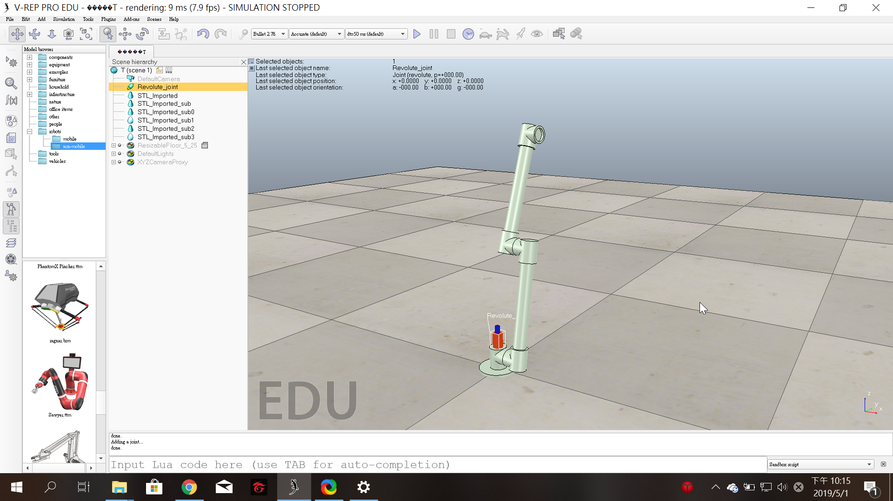
Week11:
1.上一個組合圖在 v-rep 放上軸後，會無法對應到正確角度，所以在onshape調整各軸間角度
2.放入V-rep並裝上旋轉軸
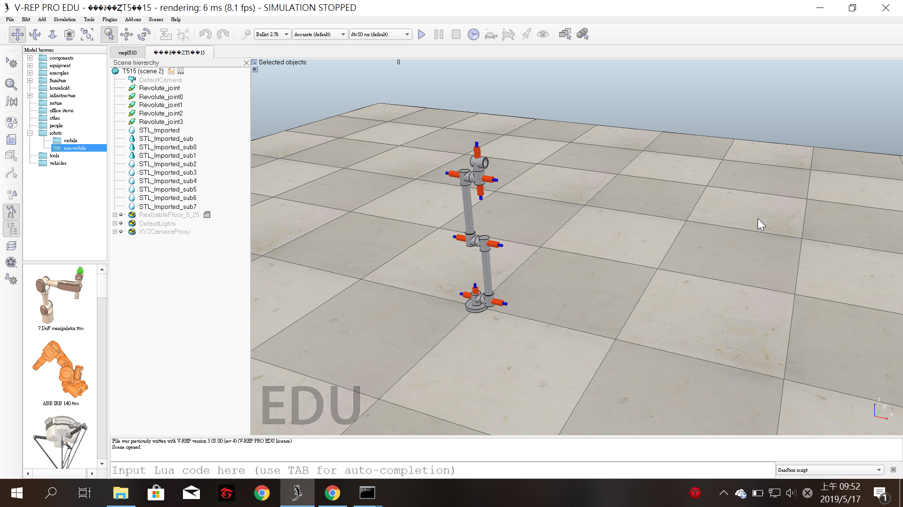
Week12:
1.手足球組配(單一軸)
Week13:
1.手足球人對人對打
下載連結:人對人對打
Week16:
1.送球機構模擬
下載連結:送球機構第三版
一開始因為球太大導致無法進入，調整完後變太小，雖然能將球推到上方，但無法推出，多次調整大小後就能成功送球
Week17: